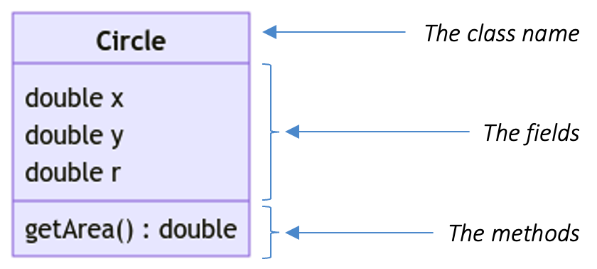

Unit 4: Encapsulation
Learning Objectives
After this unit, students should
- understand composite data type as an even higher level abstraction over variables.
- understand encapsulation as an object-oriented (OO) principle.
- understand the meaning of class, object, fields, and methods, in the context of OO programming.
- be able to define a class and instantiate one as an object in Java.
- appreciate OO as a natural way to model the real world in programs.
- understand reference types in Java and their differences from the primitive types.
Abstraction: Composite Data Type
Just like functions allow programmers to group instructions, give it a name, and refer to it later, a composite data type allows programmers to group primitive types together, give it a name to become a new type, and refer to it later. This is another powerful abstraction in programming languages that helps us to think at a higher conceptual level without worrying about the details. Commonly used examples are mathematical objects such as complex numbers, 2D data points, multi-dimensional vectors, circles, etc, or everyday objects such as a person, a product, etc.
Defining composite data type allows programmers to abstract away and be separated from the concern of how a complex data type is represented.
For instance, a circle on a 2D plane can be represented by the center (i.e., x, y) and its radius r, or it can be represented by the top left corner (i.e., x,y) and the width w of the bounding square.
In C, we build a composite data type with struct. For example,
1 2 3 4 | |
Once we have the struct defined, we have a new data type called circle. However, we are not completely shielded from its representation, until we write a set of functions that operates on the circle composite type. For instance,
1 2 3 4 | |
Implementing these functions requires knowledge of how a circle is represented. The implementation will be different if we have a different representation of circle (e.g., x and y may represent the center of the circle or the top left corner of the bounding square). But once the set of functions that operates on and manipulates circles is available, we can use the circle type without worrying about the internal representation. Of course, this assumes that we will only use the functions specifically written to work on circle type.
Additionally, the example on circle_overlap highlights another advantage of having a composite data type. To see the advantage, imagine that you do not have the data type circle. Then the function to check if two circles overlap would require 6 parameters.
1 2 3 | |
We have used a nice numbering to clearly indicate how the parameters are related. Those with the same suffix belong to the same circle. But another programmer may instead write it in a different order.
1 2 3 | |
Even worse, lazy programmers may even omit the suffix and make the entire code unreadable. So the use of composite data type is like a "glue" that binds relevant data together. That way, we know that all the elements that make up a circle will always be together.
If we decide to change the representation of a circle, then only the set of functions that operate on a circle type need to be changed, but not the code that uses circles to do other things. In other words, the representation of the circle and the set of functions that operate on and manipulate circles, fall on the same side of the abstraction barrier.
If you are the programmer who writes the code for the implementation of the circle as well as the functions that operate on and manipulate the circle then you are the implementer. On the other hand, if you are the programmer who uses the function that manipulates a circle, then you are the client.
Abstraction: Class and Object (or, Encapsulation)
We can further bundle the composite data type and its associated functions on the same side of the abstraction barrier together. This bundle is another abstraction called a class.
Class
A class is a data type with a group of functions associated with it.
We call the data in the class as fields (or members, or states, or attributes, or properties1). As for the associated functions, they are called methods. A well-designed class maintains the abstraction barrier, properly wraps the barrier around the internal representation and implementation, and exposes just the right method interface for others to use.
The concept of keeping all the data and functions operating on the data related to a composite data type together within an abstraction barrier is called encapsulation.
Let's see how we can encapsulate the fields and methods associated together, using Circle as an example, in Java.
1 2 3 4 5 6 7 8 9 10 | |
The code above defines a new class using the keyword class, gives it a name Circle2, followed by a block listing the member variables (with types) and the function definitions.
Just like we can create variables of a given type, we can create objects of a given class. Objects are instances of a class, each allowing the same methods to be called, and each containing the same set of variables of the same types, but (possibly) storing different values.
In Java, the keyword new creates an object of a given class. For instance, to create a Circle object, we can use
1 2 3 | |
To access the fields and the methods, we use the . notation. For example, object.field or object.method(..). This can be seen in Line 2 and Line 3 of the example above.
A Bad Example
Let us take a moment to appreciate the example circle v0.1 above. This is a reasonable example as the method getArea is computing the area of the circle with the radius as specified in the field r. So, we can clearly see that the method is associated with the data. Consider adding another method but this time it takes in a pen and a paper and writes "CS2030S is easy" on the paper.
1 2 3 4 5 6 7 8 9 10 11 12 13 | |
Without even knowing the implementation of pen.write(..), we can already see that this method is not associated with any circle at all. In fact, it is not even using any of the fields of the circle.
Object-Oriented Programming
A program written in an object-oriented language such as Java consists of classes, with one main class as the entry point. One can view a running object-oriented (or OO) program as something that instantiates objects of different classes and orchestrates their interactions with each other by calling each other's methods.
One could argue that an object-oriented way of writing programs is much more natural, as it mirrors our world more closely. If we look around us, we see objects all around us, and each object has certain properties, exhibits certain behaviors, and allows certain actions. We interact with the objects through their interfaces, and we rarely need to know the internals of the objects we use every day (unless we try to repair them)3.
To model a problem in an object-oriented manner, we typically model the nouns as classes and objects, the properties or relationships among the classes as fields, and the verbs or actions of the corresponding objects as methods.
Take, for example, the following partial problem description about an online airline reservation system.
Users need to be able to make bookings from an origin to a destination airport which may comprise multiple connecting flights. We record the booking date.
We can identify the following from the problem description.
| Nouns | Properties | Associated Verbs |
|---|---|---|
| User |
|
|
| Booking |
|
currently unknown |
| Airport | currently unknown | currently unknown |
From here, we can try to model the problem in OOP using three classes: User, Booking, and Airport. However, since not much information is known about Airport and assuming the only identifiable information about the airport is the airport code, then maybe we do not need to create an Airport class. Instead, we use a String.
However, for User and `Booking, we need to encapsulate the information into a class. In the case of booking, it is simply because the three different properties need to be combined. In the case of the user, we have an associated verb that needs to be modeled as a method.
When to Stop?
In the discussion above, we put forward the possibility that Airport need not be a class. So the question is, when should we stop modelling a noun as a class? We may be too eager to model everything as a class, including the date to be stored as booking date. There is also the opposite problem of too lazy to model. For instance, we may lazily group user and booking together to form a class with 4 fields.
There is no clear answer to this but as a general guide, you may want to ask the following questions.
- Is there multiple properties to be stored?
- If so, then creating a class is good.
- In the case of airport, if there is only a single data, then we need not make a class.
- Is there an action associated with the entity?
- If so, then creating a class is good.
- In the case of user, although it only has a single property, it has an association action.
- Is there a real world counterpart?
- If so, model it based on the real world.
- In the case of user and booking, we have real world counterpart so we model them as separate classes.
- Is there potential changes to the entity?
- If so, then creating a class is good.
- For instance, if in the future we plan to store more information about an airport (e.g., the country it is located, etc), then having it as a class will minimize potential changes to other parts of the code (e.g., if we used
Stringbefore, we now have to change all theseStringintoAirport).
The guide above are not exhaustive. But they are still a good starting point if this is your first attempt at modelling in OOP.
Reference Types in Java
We mentioned in Unit 2 that there are two kinds of types in Java. You have been introduced to the primitive types. Everything else in Java is a reference type.
The Circle class is an example of a reference type. Unlike primitive variables, which never share the value, a reference variable stores only the reference to the value, and therefore two reference variables can share the same value. For instance,
1 2 3 4 5 | |
The behavior above is due to the variables c1 and c2 referencing to the same Circle object in the memory. Therefore, changing the field r of c1 causes the field r of c2 to change as well.
Special Reference Value: null
Any reference variable that is not initialized will have the special reference value null. A common error for beginners is to declare a reference variable and try to use it without instantiating an object:
1 2 | |
Line 2 would lead to a run-time error message
1 | |
Remember to always instantiate a reference variable before using it.
Class Diagram (Part 1)
A useful diagram to have when trying to visualize a class is called the class diagram. A class diagram consists of 3 segments:
- The class name.
- The fields.
- The methods.
In between each segment, we draw a line to clearly delimit each segment. For the best result, the order in which the fields and methods appear should be identical to how they appear in the code.
Additionally, we omit the implementation of the method and record only the minimal information needed. Otherwise, there is no difference between class diagram and code. What we want is to have a diagram that captures the essence of a class so that we can reason about our design without actually writing the code.
For instance, consider the class Circle v0.1 above (reproduced below).
1 2 3 4 5 6 7 8 9 10 | |
The corresponding class diagram is shown below.

We will improve upon this class diagram with additional details while keeping the amount of information minimal to avoid information overload.
We encourage you to practice drawing class diagrams from code and writing code from class diagrams. This will be a useful design tool when dealing with larger programs, especially those involving multiple files. It will take more time to debug your code so a good design will save time.
Quote
"There has never been an unexpectedly short debugging period in the history of computers."
Steven Levy
Further Readings
- Oracle's Java Tutorial on Classes and Objects.
- Class Diagram. The version that we will introduce in CS2030/S is a simpler version that is sufficient for the purpose of this course.
-
Computer scientists just could not decide what to call this :( ↩
-
As a convention, we use PascalCase for class names and camelCase for variable and method names in Java. ↩
-
This is a standard analogy in an OOP textbook. In practice, however, we often have to write programs that include abstract concepts with no tangible real-world analogy as classes. ↩